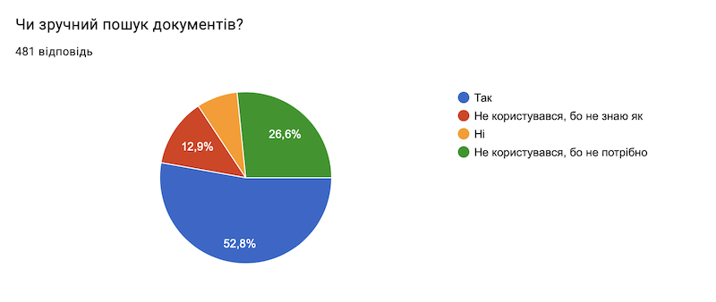
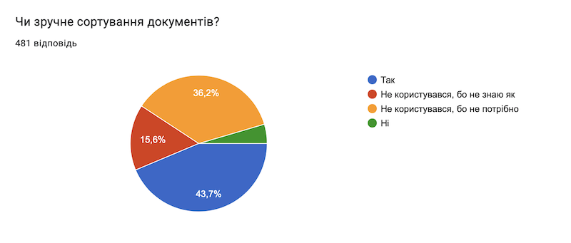

Резюме опитування: ключове - що покращити
Assistant
Опитування 2023
| Загальні результати опитування | |
| Резюме опитування: |
Загальні результати опитування


Сканер:
- Фокусування камери та сканування товару (зараз з цим є значні проблеми)
- Додати розгорнутий залишок по товару (бракований, оплачений, відвантажений ,тощо)
- Можливість сканувати та дивитися деталі товару в офлайн режимі
- Відразу показувати залишок та резерв (пришвидшить роботу з безготівкою)
- Показувати розміщення товару та розміри (інтерспорт) дуже потрібно при консультуванні покупців
- При тапу на введення артикула або шк - відразу відкривати клавіатуру
- Переглядати деталі резервів товару
- Відразу додавати товар в кошик
- Показувати аналоги товарів
- Перегляд фото товарів у збільшеному вигляді
- Автоматичне видалення історії сканування товару через кожен тиждень
Товар:
- Додати структуру товару
- Показувати АВС аналіз
- Показувати по товару : відділ, департамент, участь в акції, єВідновлення, призначення товару, країна -виробник, інструкції з використання та технічні особливості
- Додати інформацію про наявність бонусів PEPSELL на товар
- Бачити по товару вагу та габарити товарів
- Коли скануєш товар, який має декілька розмірів , щоб бачити залишки по розмірах
- Бачити залишки всієї референсії, як це є на сайті
Кошик:
- Швидке наповнення кошику , щоб можна увімкнути функцію - відразу додавати товар до кошику (в Потамус є “швидке створення”)
- Заповнювати інфо про клієнта в кошику , так як зараз багато покрокових дій
- Покращити введення кількості метрів кабелю чи товару якого є багато одиниць - натиснувши на цифри можна було ввести двійкові чи тисячні цифри
- Відразу зазначати кількість при додаванні товару в кошик з детальної карточки
- Показувати ШК по товару в кошику
- Показувати ставку ПДВ по товару
- При скануванні з кошику, щоб відразу товар додавало в кошик, в тій кількості скільки разів товар проскановано
Документи:
- РРЗ: оптимізувати додавання товару в документ, зараз забагато дій
- РРЗ: оптимізувати кнопку редагування, щоб при кліку на кнопку редагувати - була зашита дія “розпровести”
- ПЦН: при скануванні товару з ПЦН, щоб відразу додавався до ПЦН
- ПЦН: додавати товар, якого не має на залишках
- ПЦН: фільтр при друк роздрібних та акційних цінників
- ПЦН: видалити не потрібні формати цінників
- ПЦН: при роботі з цінниками ввести принцип потамусу - створення документу і в нього додавати товар
- ПЦН: при сканування з ПЦН, щоб автоматом додавало товар в ПЦН і в тій кількості скільки разів товар проскановано
- СЧТ: автоматично розбивати СЧТ на два, коли в кошику є товар з різними ставками ПДВ
- СЧТ: не підтягує ШК, коли на підставі РРЗ створють СЧТ
- Можливість оплати на конкретному терміналі без друкування документу
- Додайте можливість дзвінка з додатку на номер покупця
- Друк етикеток на принтері свого відділу
Резюме опитування: Основні проблеми
- Масові проблеми з фокусуванням
- Відстань сканування
- Швидкість пошуку товару
- Не зчитується штрих-код з першого разу, підвисає, не відкривається фото товару
- Викидає з додатку
- Незручно вибирати формат цінника на кожен артикул. І незручно вибирати кількість цінників одного артикула саме форматом цінника
- Забагато дій для додавання нових позицій в уже створений документ.
- Дуже швидко розряджається телефон
- Регулярні виліти з системи у самий незручний час
- Додаток доводиться перезавантажувати після кожного виходу з програми
- Коли велика кількість артикулів, не завжди завантажується кошик, або треба чекати і постійно перепровіряти
- Крім штрих коду та кюар коду сканує все підряд (підлогу, покупців, співробітників)
- Збільшити таймер після вилучення на 5 чек, 3 замало
Резюме опитування: Користувачі
- Не оновлюють додаток
- Не знають як працювати з повним функціоналом додатку - потрібне навчання
- Не читають довідку